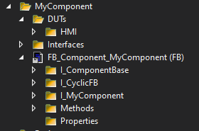
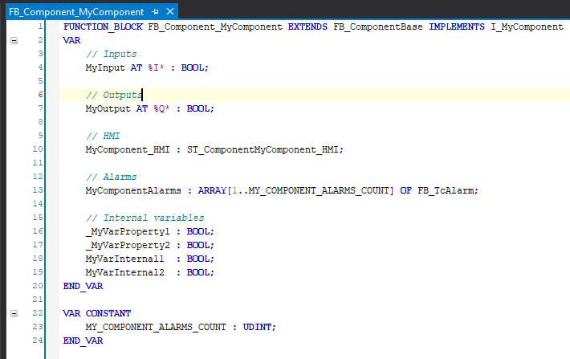
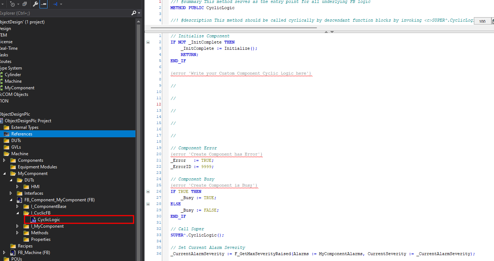
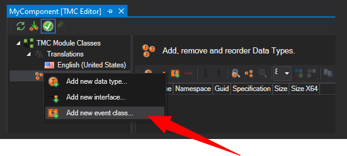
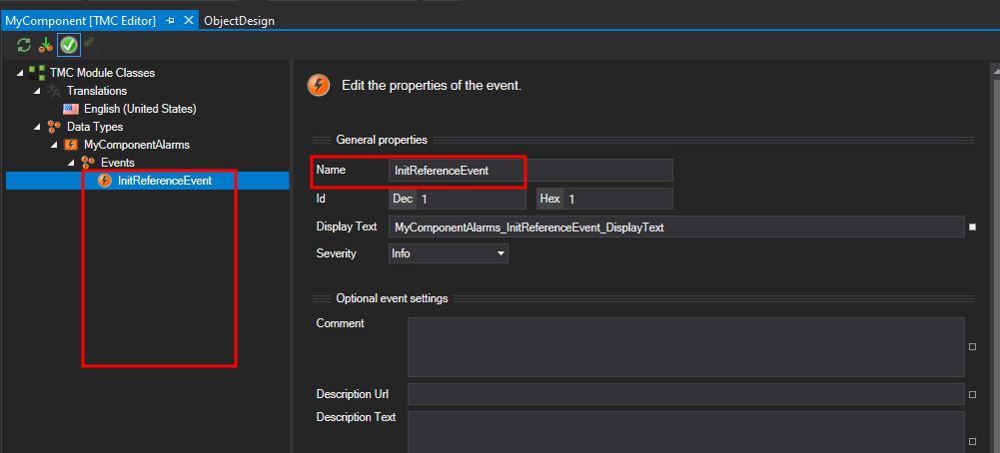
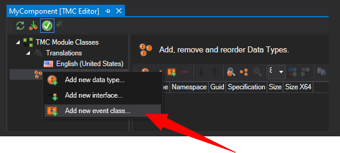
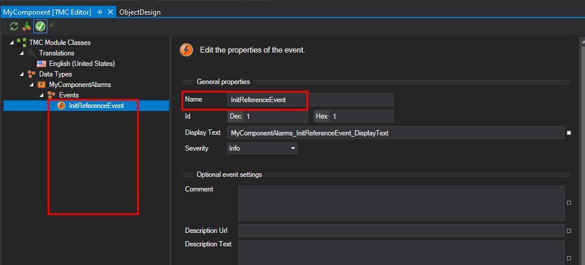
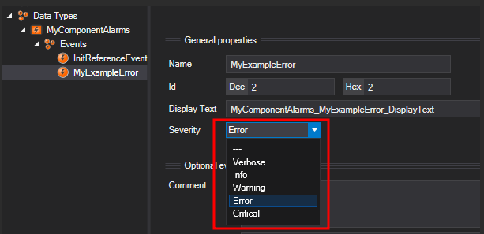
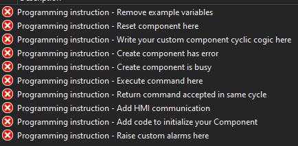

Guide to write a Component
Rules
- Plan your component before writing code.
- Use SPT style guide to develop your component.
- Use SPT Component Base.
- Apply SPT principal for Command execution.
- Create Errors for your Component.
- Create example Hmi for your Component.
- Prevent using
VAR_INPUT,VAR_OUTPUTandVAR_INOUT. Use Methods and Properties to access component. - Document your components functionality
It is necessary to be familiar with the Design Guide of the SPT Framework.
Planning
Before starting to write code for your component it is essential to plan the functionality. Consider using planning tools for your class diagram such as mermaid
To use the object oriented approach the planning process focuses on reusability of the component.
- What is the smallest single function needed?
- What is the intended function of this component?
- The component starts small with basic functions and can subsequently be inherited to add functionality.
- Plan interfaces to PackML state machine. No, to very limited sequences inside of Components. The sequencing of commands will be handled by Equipment Module or Machine Module.
Example Class Diagram
Example could be a cylinder with Extend/Retract output as base component. The extension adds inputs for extended/retracted along with error messages for final position not reached.
classDiagram
FB_Component_MyComponentExtension <|-- FB_Component_MyComponentBase
FB_Component_MyComponentBase <|-- FB_ComponentBase
FB_Component_MyComponentBase <|-- I_Component_MyComponentBase
I_Component_MyComponentExtension <|-- I_Component_MyComponentBase
FB_Component_MyComponentExtension <|-- I_Component_MyComponentExtension
FB_ComponentBase <|-- I_ComponentBase
FB_ComponentBase <|-- FB_CyclicFB
FB_CyclicFB <|-- FB_BaseFB
FB_BaseFB <|-- I_BaseFB
FB_CyclicFB <|-- I_CyclicFB
class I_ComponentBase{
CurrentAlarmSeverity
InSimulation
Name
ParentResponseDefinitions
AllowHmiControl()
BlockHmiControl()
Reset()
}
class I_CyclicFB {
InitComplete
CyclicLogic()
}
class I_BaseFB{
Busy
Error
ErrorID
}
note for FB_ComponentBase "This is found in Library SPT Base Types"
class FB_ComponentBase{
CreateEvents()
HMICommunication()
Initialize()
Monitoring()
RaiseAlarm()
RaiseAlarmWithStrings()
RaiseEventWithStrings()
}
class I_Component_MyComponentBase{
MethodCommand1()
MethodCommand2()
Property1
Property2
}
class I_Component_MyComponentExtension{
FeedbackProperty1
FeedbackProperty2
}Component Development
The FB_ComponentBase provides the necessary functions to integrate seamlessly with the SPT Framework. FB_ComponentBase implements I_ComponentBase and extends FB_CyclicFB.
Organize your components FB_Component_MyComponent methods and properties in folders as shown in the following example.
Example Folder Structure

Variables
The components variables are declared in the header of the FB. The following basic structure is recommended.

Cyclic Code
Cyclic logic will be executed in the method CyclicLogic() provided by FB_CyclicFB. No code is allowed in the body of the FB as it violates the design pattern of SPT!
Inside of CyclicLogic() the component will be initialized, custom code executed, super called and the alarm severity determined.
Every component inherits FB_BaseFB, related variables for Error, ErrorId and Busy are assigned in CyclicLogic() based on your custom functions.

Commands and Feedback
Interfaces provide a unified access to your component. It shall include the commands to execute functions and the required feedbacks.
The execution of a command for the component is required to implement the following pattern.
Trigger the Command:
The command is executed by calling the method for one cycle, the return value of the method must indicate if the command has been accepted.
Example Command
Method MyCommand1:BOOL:
1 2 3 4 5 6 7 8 9 10 11 12 | |
Wait for Done or Error:
Once the command has been accepted, the component is expected to be Busy indicated by MyComponent.Busy equals True . At successful completion of the command the Busy turns back to False.
In cases where the component command fails execution the Busy bit is expected to turn False and the Error,ErrorId indicate an error. Further an alarm is expected to be raised. (Explained in the following paragraph.)
Example Command Sequence for a Component
1 2 3 4 5 6 7 8 9 10 11 | |
This is the default handling of component commands if not documented otherwise.
Errors and Warnings
In case the component fails an error is expected. The SPT framework uses the TwinCat Eventlogger
Create an Alarm
To create Alarms, each component has an array of FB_TcAlarm along with a .tmc file which contains the event class.
1 2 | |
Create the Event Class in the TMC Editor.
Create Event Class
 



The method CreateEvents() is called during initialization from the base class and needs to be overwritten to initialize the MyComponent Events.
The first event in the custom created event class is reserved for the initialization message.
1 2 3 4 5 | |
Trigger an Alarm
After the alarms have been initialized they can be raised in Monitoring().
1 2 3 4 5 | |
The reset of the alarm is expected in Reset().
1 2 3 4 5 | |
Note Reset
If FB_PackML_BaseModule is used as Equipment Module or Machine Module the state Clearing() is calling the Reset() of the registered component when the bit Error is True.
The component is cyclicly determining the highest CurrentAlarmSeverity in CyclicLogic(). The Equipment Module which the Component is part of will read the CurrentAlarmSeverity and determine along with the ParentFaultResponseDefinitions the error reaction.
By default the error reaction is set in the base class FB_ComponentBase but may be adjusted by the component developer.
1 2 3 4 5 | |
In the default case any alarm with severity error or critical will lead the controlling EM to an Abort_ImmediateError.
The error reaction can be changed via property ParentResponseDefinitions.

Tip Error Reaction
Example case to change the error reaction is the failure of a stack light fuse. The alarm can have severity error, however the error reaction is set to E_AlarmResponse.NoResponse.
HMI
For communication with the HMI/UI the structure ending with _HMI will be used. This structure consists of three Parts - config, command and status.
1 2 3 | |
1 2 3 4 5 6 7 | |
FB_ComponentBase contains ComponentBase_HMI for the config, command and status from the Base Class to be used in HMI. E.g. Busy, Error, ErrorID.
Code for Hmi communication will be placed in the overwritten method of HMICommunication().
First section ensures commands are triggered with positive edge.
1 | |
Allow and Block HMI Control
ComponentBase_HMI.Status.HMIControlAvailable is provided by the FB_ComponentBase. The Equipment Module can influence HMI operability by using the Methods AllowHmiControl() and BlockHmiControl().
Second section provides feedback to the base class if command is currently active to ensure one command at a time.
1 | |
The third section updates the status to the HMI.
1 2 3 | |
Documentation
In any case it is necessary to document the intent and functionality of your custom component.
To release the component via the SPT Framework platform the following documentation points are required.
Rules for Documentation
- Class Diagram
- Flow charts of operation and commands
- User Guide with quick start and example code
- Interface documentation explaining all Methods and Properties
- Function Blocks, intended use and functions
- Data Types
- Parameter
- Change Log
Template
This guide to write a component provides a template component to find here.
The compiler errors will guide along with this document to develop a custom component. 